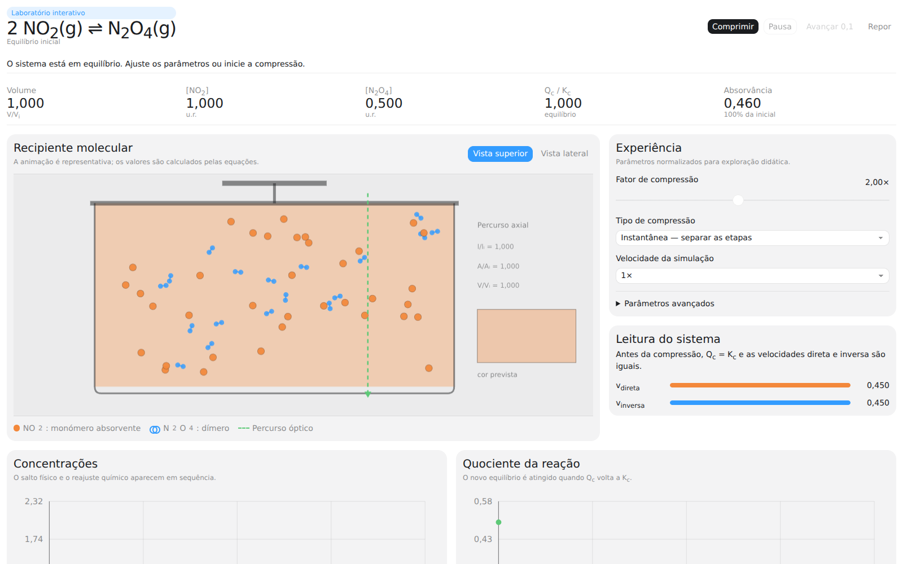

Coloca o planeta em órbita
Define direção e intensidade, observa a trajetória prevista e mantém o planeta em órbita com os vetores velocidade e força gravítica.
Gravitação · vetores · movimento orbitalFísica e Química em movimento
Uma plataforma educativa para ecrã grande e webcam. Os participantes veem o corpo e a mão representados no ecrã, escolhem uma experiência por gestos e aprendem conceitos científicos enquanto jogam.
Duelo Gravitacional
Nova experiência para dois jogadores
Dois jogadores lançam asteroides para atingir o planeta adversário. O ataque direto é bloqueado por uma nave que atravessa o espaço e funciona como cronómetro: é necessário explorar trajetórias curvas e assistências gravíticas.
Seis módulos científicos
Todos os módulos usam uma interface comum, pontuação de 0 a 1000 e um Top global guardado apenas no computador da instalação.
Define direção e intensidade, observa a trajetória prevista e mantém o planeta em órbita com os vetores velocidade e força gravítica.
Gravitação · vetores · movimento orbitalOrienta o espelho, acerta no alvo e compara os ângulos de incidência e reflexão assinalados no ecrã.
Reflexão · normal · ângulosCompleta água, dióxido de carbono, amoníaco ou metano e observa a molécula final a rodar com geometria e curiosidades.
Ligações · geometria molecular · substânciasOrganiza as cores do arco-íris e relaciona frequência, comprimento de onda, intensidade e cor da luz visível.
Ondas · espetro visível · energiaConduz uma bola com inércia através do percurso, interpretando em tempo real os vetores velocidade e aceleração.
Cinemática · inércia · atrito · colisõesCompete a dois, cria lançamentos curvos, usa os campos gravíticos e protege o teu planeta enquanto a nave-cronómetro atravessa o sistema.
Gravitação · forças · órbitas · estratégiaAplicações pedagógicas autónomas
Projetos independentes do quiosque principal, preparados para utilização individual, em aula ou em casa.

Inclina o telemóvel ou desenha uma trajetória e observa velocidade, aceleração e componentes cartesianas.
Página e download →
Comprime a mistura, separa o efeito físico da resposta química e acompanha Qc, Kc, concentrações e cor.
Experimentar e descarregar →Interação natural
A câmara deteta localmente a presença e representa cabeça, tronco, braços e pernas. A imagem real não é apresentada.
Um círculo destaca a mão e explica o gesto de pinça. Depois da introdução, fica visível apenas a mão virtual.
Mantém a mão sobre um cartão durante o tempo de confirmação, reduzindo escolhas acidentais.
Faz pinça, arrasta, ajusta direção e intensidade e abre a mão para executar a ação.
Instalação em Windows
INSTALAR_WINDOWS.bat.EXECUTAR_DEMO_WINDOWS.bat.EXECUTAR_WINDOWS.bat.Requer Windows 10/11, webcam, navegador moderno e Node.js LTS. Recomenda-se um ecrã 16:9 com resolução Full HD.
Projeto educativo aberto
A arquitetura modular permite acrescentar experiências científicas, adaptar parâmetros de dificuldade e desenvolver novas atividades no Clube Ciência Viva.